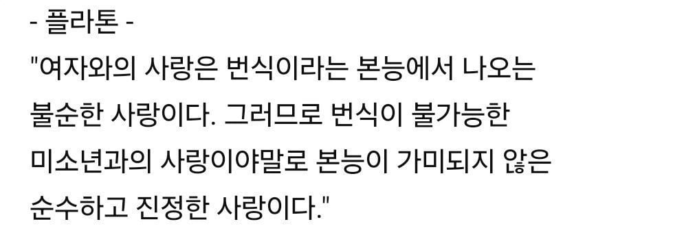

테베의 신성병단만 봐도..
순애에 미친새끼
아킬레우스랑 파트로클로스중에 누가 바텀인지 논쟁했던 양반임
멍청한놈 "피임"이야 말로 궁극적 사랑이다
겨울에 먹는 아이스크림이야말로 진짜다
유구한 전통
근데 저게 플라톤만이 아니라 당시 그리스 전체적인 분위기였어.
그래서 여성과의 성행위는 아이를 낳기 위한 수단으로, 남성간의 성행위를 더 고결한것으로 보고있어서 스승과 제자들간의 관계 중 상당수가 그쪽으로 흘렀다 하고.
일종의 홍대병 같은거였나 ㅋㅋㅋ
이것이 이데아...
꼴잘알


이거때매 갑자기 위대한 철학자에서 자기정당화하는 궤변론자로 보이네
순수하고 진정하면 '미'를 붙이지 말아야지 얼빠새끼들
꼴잘알